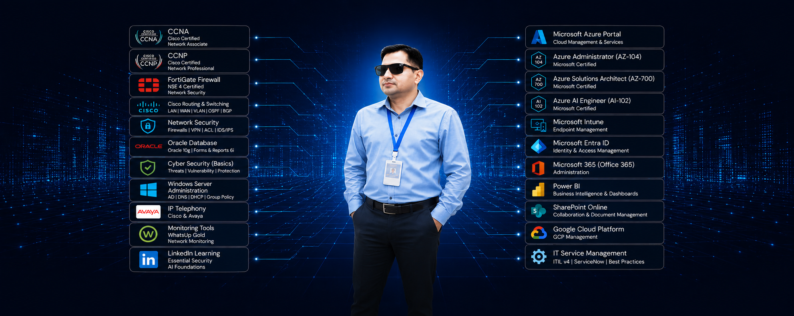

Tanweer Ansari
Network & IT Support Engineer
Experienced IT Professional with 16+ years of overall experience, including enterprise network, infrastructure, IT support, Microsoft Azure, Microsoft 365, Fortinet and endpoint management.
Experienced in diverse IT projects and dedicated to optimizing IT performance through network infrastructure, LAN/WAN, routing & switching, Fortinet firewall, Microsoft Azure, Office 365, Windows Autopilot and Microsoft Entra ID.
Experience
& Switching
Infrastructure
Security

Practical Enterprise IT Support Across Network, Cloud, Systems and Endpoints.
I work across the complete IT infrastructure lifecycle — from network connectivity and firewall security to Azure infrastructure, Microsoft 365, Entra ID, Intune and end-user computing.
My approach is hands-on, structured and focused on reliable support for enterprise users and services.
I combine traditional infrastructure knowledge with modern cloud and endpoint technologies to support secure and reliable IT environments.
Explore About Me →Practical skills across enterprise IT operations.
NETWORKING
Cisco Routing & Switching · CCNA · CCNP · LAN/WAN · TCP/IP · VLAN · Routing · Switching · VPN · Network Troubleshooting · Network Monitoring
SECURITY
Fortinet FortiGate · Fortinet NSE 4 · Firewall Administration · Firewall Policies · VPN · Network Security · Access Control · Security Troubleshooting
MICROSOFT AZURE
Azure Administration · Azure Infrastructure · Azure Networking · Virtual Networks · Network Security · Azure Identity · Monitoring · Resource Management
MICROSOFT CLOUD
Microsoft Entra ID · Microsoft Intune · Windows Autopilot · Microsoft 365 · Office 365 · Exchange Online · SharePoint · Endpoint Management
SYSTEMS
Windows Server · Windows 10/11 · Active Directory · Group Policy · Endpoint Support · Desktop Support · System Administration
IT OPERATIONS
L2 IT Support · Incident Management · Service Requests · ITIL Practices · IT Asset Management · Troubleshooting · Documentation · User Support
16+ years of hands-on enterprise IT experience.
Network Engineer
Enterprise network infrastructure, routing & switching, security and IT support operations.
- Cisco LAN/WAN routing and switching
- VLAN, TCP/IP, VPN and network troubleshooting
- Fortinet FortiGate firewall administration
- Network monitoring and infrastructure support
L2 IT Support Engineer
Hands-on enterprise support covering users, endpoints, systems, applications and infrastructure.
- L2 troubleshooting for enterprise users
- VPN, email, Outlook and connectivity support
- Printer, desktop and endpoint troubleshooting
- Incident and service request management
Azure & Microsoft 365
Supporting modern cloud, identity and endpoint management technologies.
- Microsoft Azure infrastructure
- Microsoft Entra ID and identity management
- Microsoft Intune and Windows Autopilot
- Microsoft 365 and Office 365 administration
Enterprise Infrastructure Support
Supporting secure and reliable enterprise technology environments.
- Fortinet firewall policies and VPN
- Windows Server and Active Directory
- IT asset and inventory management
- Technical documentation and SOPs
Hands-on enterprise IT projects and support domains.
Enterprise Network Infrastructure
Managing and troubleshooting enterprise LAN/WAN environments including Cisco routing and switching, VLANs, connectivity, VPN and network infrastructure.
Fortinet Network Security
Firewall administration, security policies, VPN support, troubleshooting and network security operations using Fortinet FortiGate.
Microsoft Azure Infrastructure
Working with Azure infrastructure, networking, identity and cloud administration.
Microsoft 365 & Entra ID
Supporting Microsoft 365, Entra ID, user identities, access management, Outlook and cloud productivity services.
Intune & Windows Autopilot
Endpoint management, device provisioning, Windows Autopilot and modern device administration.
IT Inventory Management
Designing IT inventory and asset tracking solutions using Microsoft Power Platform and SharePoint.
Enterprise L2 IT Support
Resolving complex technical issues involving networks, VPN, systems, endpoints, printers, email, user accounts and enterprise applications.
Technical Documentation
Maintaining clear technical documentation, troubleshooting procedures, infrastructure records and operational knowledge.
Enterprise tools I work with every day.
From Network Infrastructure to Cloud
A practical view of the enterprise technology path — from users and connectivity through security, cloud, identity and endpoint management.
A practical Network & IT Support Engineer for enterprise environments.
I bring 16+ years of hands-on experience supporting the infrastructure people rely on every day — from connectivity and security to cloud services, systems, endpoints and user support.
Let's build dependable infrastructure.
Available for network, cloud, infrastructure and technical leadership opportunities across Saudi Arabia and the GCC.